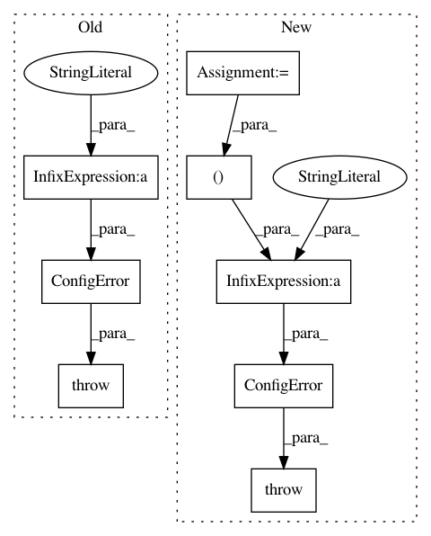

aacc3efb1db8cdf8e7aa5c85e0716f910716d9cc,anvio/drivers/sourmash.py,Sourmash,process,#Sourmash#Any#Any#,54
Before Change
exit_code = utils.run_command(compare_command, self.log_file_path)
if int(exit_code):
raise ConfigError("sourmash returned with non-zero exit code, there may be some errors.\
Please check the log file for details. Offending command: \
`%s`" % " ".join(compare_command[:7] + "..."))
matrix = utils.get_TAB_delimited_file_as_dictionary("matrix.csv", indexing_field=-1, separator=",")
self.progress.end()
After Change
exit_code = utils.run_command(compare_command, self.log_file_path)
if int(exit_code):
self.progress.end()
raise ConfigError("sourmash returned with non-zero exit code, there may be some errors.\
Please check the log file `%s` for details. Offending command: \
`%s` ..." % (self.log_file_path, " ".join([str(x) for x in compute_command[:7]])))
matrix = utils.get_TAB_delimited_file_as_dictionary("matrix.csv", indexing_field=-1, separator=",")
self.progress.end()
In pattern: SUPERPATTERN
Frequency: 3
Non-data size: 8
Instances
Project Name: merenlab/anvio
Commit Name: aacc3efb1db8cdf8e7aa5c85e0716f910716d9cc
Time: 2019-09-02
Author: kiefl.evan@gmail.com
File Name: anvio/drivers/sourmash.py
Class Name: Sourmash
Method Name: process
Project Name: merenlab/anvio
Commit Name: eefb50f757cc6927d894f197a7e8181f7aecf595
Time: 2020-03-22
Author: a.murat.eren@gmail.com
File Name: anvio/genomedescriptions.py
Class Name: GenomeDescriptions
Method Name: get_genome_hash_for_internal_genome
Project Name: merenlab/anvio
Commit Name: e44d8f023adb0c45ce4d88be5c671f3f3d99ea12
Time: 2020-04-28
Author: kiefl.evan@gmail.com
File Name: anvio/tables/miscdata.py
Class Name: MiscDataTableFactory
Method Name: __init__